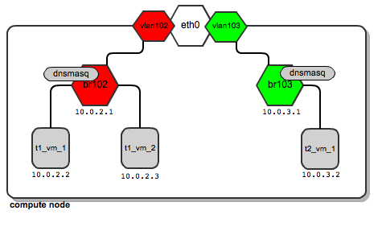
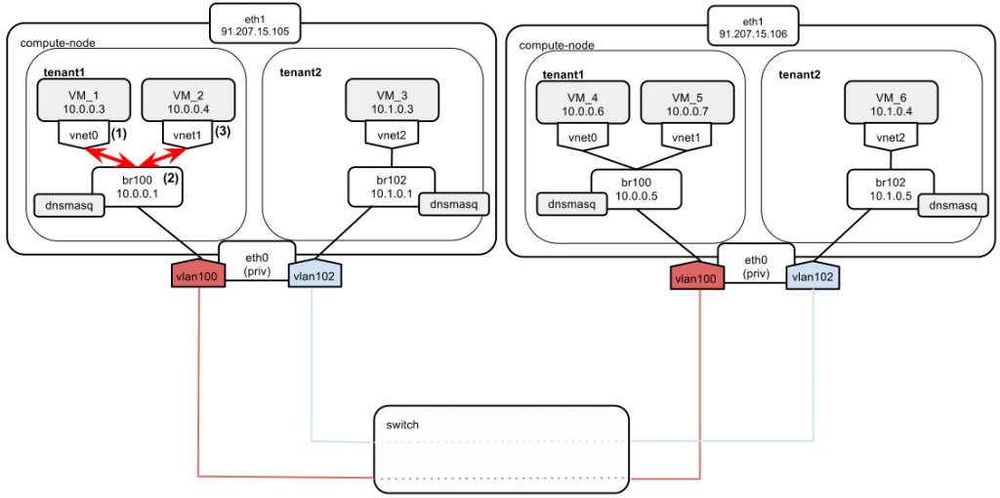
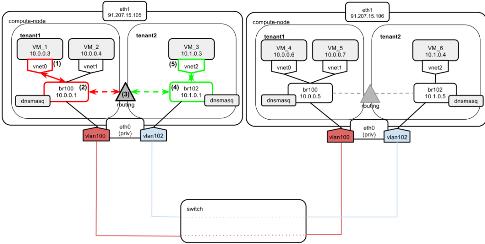
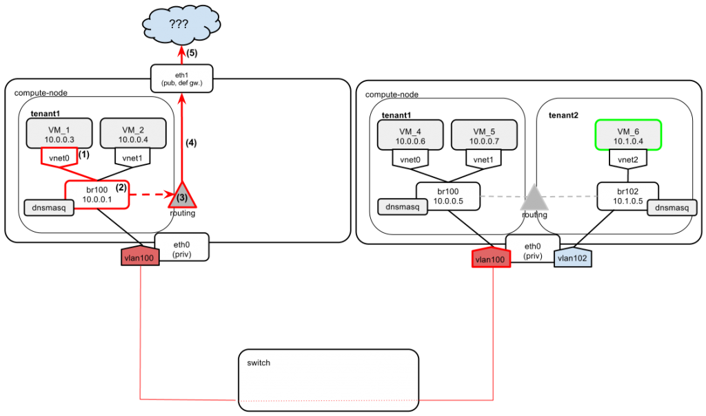

openstack Essex网络结构
Table of Contents
2 Essex
2.1 安装
2.2 网络结构
E版本中quantum还是孵化项目，网络服务是nova-network。Essex没有手动搭建，分析基于网络资料.
http://www.mirantis.com/blog/openstack-networking-flatmanager-and-flatdhcpmanager/
http://lynnkong.iteye.com/blog/1699876
http://www.searchcloudcomputing.com.cn/showcontent_67233.htm
E版本的网络分为三种，FlatManager,FlatDHCPManager和VlanManager.
2.2.1 FlatManager和FlatDHCPManager
FlatManager与FlatDHCPManager网络差不多,只不过后者多了dchp服务。两种网络都是桥接。网络中有网桥设别br100，所有虚拟机桥接在br100上,处于同一个广播域，没有二层隔离。
2.2.1.1 FlatManager

最简单的网络结构,计算节点上所有虚拟机桥接在br100上，默认没有IP，需要管理员手动配置或使用物理网络的dhcp服务,不支持floating IP.
2.2.1.2 FlatDHCPManager

与FlatManager模式类似，也是计算节点所有虚拟机桥接在同一个桥上。但是nova的会多一些配置,每一个nova-network服务会起一个dnsmasq进程，监听br100，虚拟机通过dhcpdiscover获取fixed IP。该模式支持floating IP。 FlatDHCPManager模式有两中典型结构。
- single-host
一种就是网络节点运行nova-network,计算节点运行nova-compute,nova-network主机建立网桥(默认br100,配置项flat_network_bridge=br100),给该网桥指定该网络网关IP,同时在网桥处起DHCP进程，建立iptables规则(SNAT/DNAT)使虚拟机与外界通信。计算节点负责创建自己节点的网桥,此时的计算节点网卡可以不需要IP地址，因为网桥把虚拟机和nova-network主机连接在一个逻辑网络内。虚拟机启动时通过发送dhcpdiscover获取fixed ip,网关是nova-network主机的br100。虚拟机通往外界的数据都要经过nova-network主机。缺点单节点故障，无二层隔断.
- multi-host
针对单节点故障问题，最佳方案就是下面这中模式。 在每个计算节点部署nova-network,每个计算节点为自己的虚拟机负责，每个计算节点创建网桥并为网桥指定不同IP(从fixed ip中取)作为本节点虚拟机网关，每个计算节点起DHCP服务，同时要求每个计算节点至少配两块物理网卡，一块为外网网卡，一块桥接br100,每个计算节点负责自己的虚拟机与外网的通信。 在每个计算节点:- 从flat IP池中取出一个给网桥
- 创建dnsmasq DHCP进程，监听网桥设备IP
- 该节点上所创建的虚拟机的默认网关为网桥IP
FlatDHCPManager会在每个计算节点创建一个配置文件记录虚拟机的私有IP，同时避免IP重复分配。文件数据取自nova数据库，包括虚拟机的MAC,IP和hostname,每个dnsmasq进程负责为本节点的虚拟机分配IP。

上图多节点环境中，vm_1和vm_2的网关是10.0.0.1，vm_3和vm_4的网关是10.0.0.4。
默认flat网络中的虚拟机相互可见，但可以通过配置nova.conf中的allow_same_net_traffic=False,
来强制虚拟机间的隔离：该配置通过iptables规则来阻止虚拟机间的通信（即便是同一个租户的虚拟机），除非使用安全组策略实现通信。 nova.conf中的相关配置# 使用的网络模式 network_manager=nova.network.manager.FlatDHCPManager # 连接虚拟机的网桥名称 flat_network_bridge=br100 # 网桥绑定的网卡 flat_interface=eth0 # 在flat模式，下面的配置允许在虚拟机启动前将IP地址注入到镜像的/etc/network/interfaces flat_injected=True # 私有IP池 fixed_range=YOUR_IP_RANGE_FOR_FIXED_IP_NETWORK
2.2.2 VLANManager
VLAN模式是Nova的默认网络模式，针对两种FLat模式，VLAN模式实现了二层隔离和租户子网。
2.2.2.1 与Flat模式的区别
FLat模式下，管理员的工作流程应该是这样的：
- 为所有租户创建一个IP池
nova-manage network create --fixed_range_v4=10.0.0.0/16 --label=public
- 创建租户
- 租户创建虚拟机，为虚拟机分配IP池中的可用IP,即使是不同租户的虚拟机也在同一网段.
而在VLAN模式下，流程变成下面这样：
- 创建新的租户，并记下租户ID
- 为该租户创建独占的fixed_ip段
nova-manage network create --fixed_range_v4=10.0.1.0/24 --vlan=102 --project_id="tenantID"
- 租户创建虚拟机，从租户的私有IP段内分配IP给虚拟机,所以，与Flat模式相比，Vlan模式为网络增加了两个东西：
- 将子网与租户(–project_id=<tenantID>)关联
- 为租户网络分配一个vlan号
这样不同租户创建的虚拟机会有不同子网的IP。 VlanManager做三件事：
- 在计算节点为租户的网络创建独占的网桥
- 在计算节点的物理网口eth0之上创建vlan interface（虚拟接口）
- 在网桥处关联一个dnsmasq进程，为虚拟机分配IP
2.2.2.2 计算节点网络结构
看下面的三种情况:
- 一个计算节点只有一个租户

一个计算节点上有多个租户

一个租户的虚拟机分布在多个计算节点

注意以下几点
- 每个租户有自己的网桥,vlan interface,vlan id,一个计算节点上有几个租户的虚拟机，就会有几个网桥，就会创建几个dnsmasq进程
- 不同租户的虚拟机默认不能通信
- 多个计算节点通过支持vlan tag的交换机连接，且交换机工作在trunk模式。
上图中，租户t1从10.0.2.2虚拟机ping10.0.2.5的通信过程:
- 首先数据包从10.0.2.2通过网桥br102到虚接口VLAN102，该数据包打上vlan102的标签发往交换机
- 数据包经过物理交换机,校验vlan标签,传递到第二个计算节点
- 节点根据数据报的vlan标签，把数据包发往vlan102接口
- vlan102接口把vlan标签从数据包中剥离，以便可以发往虚拟机
- 数据包通过br102，最终到达10.0.2.5
VLANManager模式nova.conf的相关配置
#We point OpenStack to use VlanManager here: network_manager=nova.network.manager.VlanManager #Interface on which virtual vlan interfaces will be created: vlan_interface=eth0 #The first tag number for private vlans #(in this case, vlan numbers lower than 100 can serve our #internal purposes and will not be consumed by tenants): vlan_start=100
2.2.2.3 局限
- 不同租户不能拥有相同的IP
- VLAN tag有4096的限制,也就是说租户数量不能超过4096
2.2.3 VLANManager模式通信流程(multi-host)
2.2.3.1 虚拟机启动并获取IP

VM启动发送DHCPDISCOVER广播，本机br100收到回应DHCPOFFER,虚拟机获得IP.不同计算节点的虚拟机网关也不同.
2.2.3.2 VM_1访问外网8.8.8.8,且该虚拟机只有fixed_ip

- VM_1向8.8.8.8发ping包
- 目的地址不在本网段，发送到默认网关(10.0.0.1)
- 计算节点查看路由表，没有发现对应的路由规则，于是发送到计算节点默认网关（91.207.15.105）
- iptables的SNAT规则处理：
nova-network-snat -s 10.0.0.0/24 -j SNAT --to-source 91.207.15.105
该规则是根据nova.conf中的routing_source_ip=91.207.15.105
- 8.8.8.8回复给91.207.15.105,发送给VM_1.
2.2.3.3 同一租户，同一个计算节点的两台虚拟机通信

VM_1在子网内发ARP广播，通过br100传遍tenant1的网络，VM_2回应，VM_1知道了VM_2的MAC并通信。vlan interface和物理交换机的存在扩大了租户的二层广播域，所以VM_1发送的ARP请求，含有vlan100虚接口的计算节点上的虚拟机也能收到。
2.2.3.4 同租户，不同计算节点的虚拟机通信

- 两个虚拟机在同一网段，但在不同计算节点上。VM_1发送ARP广播包查询VM_5的MAC地址
- 广播包到达br100,并转发到br100的所有端口，包括vlan100
- 数据包到vlan100并打100tag。
- 数据包通过物理交换机（交换机配置为”trunk”模式）
- 数据包到达第二个计算节点，因为带有vlan100标签，所以只有vlan100接口能接收，到达vlan虚接口，并去掉tag
- 通过br100
- VM_5收到广播并响应,reply数据包原路返回，两台虚拟机进行正常通信。
可能有这样的虚拟机，不同的租户属于同一组织，有相互通信的需求。这个时候就需要配置*安全组*
允许tenant1和tenant2通信的安全组规则:
#tenant1: nova secgroup-add-rule default tcp 1 65535 10.1.0.0/24 nova secgroup-add-rule default ping 1 1 10.1.0.0/24 #tenant2: nova secgroup-add-rule default tcp 1 65535 10.0.0.0/24 nova secgroup-add-rule default ping 1 1 10.1.0.0/24
这样两个租户就可以通信了
2.2.3.5 同计算节点，不同租户

两个计算节点的相关路由表
10.0.0.0/24 dev br100 proto kernel scope link 10.1.0.0/24 dev br102 proto kernel scope link
- 两个虚拟机属于不同的租户，不同的网段，但在同一个计算节点。于是来自VM_1的包发送到默认网关10.0.0.1
- 包到达br100
- 计算节点根据路由表将包路由到br102
- 包到达br102，根据ARP广播找到VM_3的MAC地址
- VM_3返回MAC地址。因为两个虚拟机不再同一个网段，VM_3会把数据包发到自己的默认网关10.1.0.1，数据包随后会被路由到br100进入租户1的网络。
2.2.3.6 不同租户，不同节点VM_1 ping VM_6

通信过程走的是不对称路由，即VM_1 to VM_6和VM_6 to VM_1走不同的路由路线。
- 两个虚拟机属于不同的租户，不同的网段，在不同的计算节点上。VM_1的包发送到默认网关10.1.0.1
- 包到达br100
- 计算节点看到目的地址（10.1.0.0/24）的路由是br102，于是包被路由到br102
- 现在数据包在租户2的二层网络内
- 获取vlan 102标签
- 数据包通过交换机
- 包到达其他计算节点，因为带有vlan102的标签，于是通过vlan102接口，标签被剔除
- 包通过br102到达VM_6
- VM_6向VM_1回应（目的地址10.0.0.3），包发送到默认网关10.1.0.5
10 计算节点看到目的地址(10.0.0.0/24)的路由是br100,于是包被路由到br100
- 现在数据包在租户1的二层网络内
- 打vlan100标签
- 通过交换机
- 到达左边计算节点的物理网络接口，因为包带有vlan100标签，所以被转发到vlan100接口，剔除vlan标签
- 数据包通过br100到达VM_1
2.2.3.7 特殊情况

左边的计算节点上没有tenant2的虚拟机，所以openstack不会在上面创建br102,此时VM_1 ping VM_6的过程：
- VM_6在不同网段，VM_1的包发送到默认网关10.1.0.1
- 计算节点没有10.1.0.0的路由(没有br102)，所以计算节点把包发送到自己的默认路由(eth1上)
- 数据包到eth1,但是找不到发到10.1.0.0的路，所以我们将看到"host unreachable"的信息。所以租户间的通信不能完全依赖fixed ip.最简便的解决方法(或许也是最好的)是使用floating ip进行租户间的通信。
2.2.3.8 不同租户使用floating ip通信
假设虚拟机分配的floating_ip如下：
tenant1: VM_1: 91.208.23.11 tenant2: VM_6: 91.208.23.16
- 从VM_1 ping VM_6，数据包源地址10.0.0.3，目的地址*91.208.23.16*
- 目的地址在不同网段,数据包被发送到默认网关10.0.0.1
- 计算节点将数据包路由到eth1
- iptables的SNAT规则(10.0.0.3 -> 91.208.23.11)处理，源地址改为91.208.23.11
- 数据包(源地址91.208.23.11,目的地址91.208.23.16)到达另一个计算节点，由该计算节点上的iptables的DNAT规则处理，目的地址改为10.1.0.4
- 根据目的地址，数据包被路由到br102
- 到达目标虚拟机VM_6
ICMP应答走的路径类似，但注意的是，ICMP应答被认为与ICMP请求关联，所以在左边计算节点上没有显式的DNAT的处理，由系统内部NAT table处理。
2.2.4 理解floating ip
- floating_ip是需要用户主动申请并绑定到用户虚拟机，并且可以从虚拟机解绑定，然后绑定到另一个虚拟机，一旦虚拟机被删除，floating_ip仍然属于用户，不会被删掉。目前，floating_ip不支持一个IP绑定多个虚拟机实例以实现负载均衡（Amazon ELB）。
- fixed_ip是虚拟机创建时自动分配，没有办法为虚拟机指派一个特定的fixed ip,而且，如果虚拟机被意外删除，但又通过虚拟机快照恢复后，fixed_ip很有可能会发生变化。
- 管理员可以配置多个floating_ip池，用户可以从不同的池中获取IP，这里配置多个IP池的目的是从不同的ISP提供商获取IP池，保证链接，这样即使一个ISP挂掉，不影响其他IP池的使用。
2.2.4.1 分配floating ips
- 管理员创建IP池
nova-manage floating create --ip_range=PUBLICLY_ROUTABLE_IP_RANGE --pool POOL_NAME
- 用户创建虚拟机
| ID | Name | Status | Networks |
|---|---|---|---|
| 79935433-241a-4268-8aea-5570d74fcf42 | inst1 | ACTIVE | private=10.0.0.4 |
- 查询可用floating_ip
nova floating-ip-pool-list
| name |
|---|
| pub |
| test |
- 从"pub/test"获取一个IP
nova floating-ip-create pub
| Ip | Instance Id | Fixed Ip | Pool |
|---|---|---|---|
| 172.24.4.225 | None | None | pub |
- 为虚拟机绑定IP
nova add-floating-ip 79935433-241a-4268-8aea-5570d74fcf42 172.24.4.225
- 查看floating_ip的分配情况
nova floating-ip-list
| Ip | Instance Id | Fixed Ip | Pool |
|---|---|---|---|
| 172.24.4.225 | 79935433-241a-4268-8aea-5570d74fcf42 | 10.0.0.4 | pub |
2.2.4.2 引起的变化
虚拟机绑定floating ip后，虚拟机的网络配置没有任何变化，floating ip的所有配置由nova-network完成:fixed ip和floating ip的NAT设置。 看下面这张图:

eth1连接外网（IP：91.207.15.105，该IP也是该计算节点的默认网关），eth0连接内网（没有指定IP），当虚拟机关联floating_ip时，两个东西发生变化：
- floating_ip作为计算节点eth1的secondary地址，可以通过”ip addr show eth1”命令查看：
inet 91.207.15.105/24 scope global eth1 # primary eth1 ip inet 91.207.16.144/32 scope global eth1 # floating ip of VM_1
- 增加计算节点的iptables中NAT表的规则
#iptables -S -t nat # 这条规则保证了在计算节点上可以访问虚拟机私有IP -A nova-network-OUTPUT -d 91.207.16.144/32 -j DNAT --to-destination 10.0.0.3 # 这条规则保证从外网发向91.207.16.144的数据包能转发的10.0.0.3 -A nova-network-PREROUTING -d 91.207.16.144/32 -j DNAT --to-destination 10.0.0.3 # 这条规则保证从虚拟机发往外网的数据包的源IP为其flaoting_IP -A nova-network-float-snat -s 10.0.0.3/32 -j SNAT --to-source 91.207.16.144
2.2.4.3 通信流程
从外网访问虚拟机：
- 首先数据包到达计算节点的eth1，DNAT规则开始处理，数据包的目的IP变为私有IP：91.207.16.144 –>10.0.0.3
- 计算节点通过查看路由表，将数据包发往br100，通过br100发往目标虚拟机
ip route show： 10.0.0.0/24 dev br100
从虚拟机访问外网（以ping 8.8.8.8为例）：
- 因为目的IP不在虚拟机网段，数据包会发送到虚拟机的默认网关，也就是br100
- 计算节点检查路由表，也没发现对应的路由规则，于是发往默认网关91.207.15.105
- 数据包由iptables的SNAT规则处理，源IP被修改为虚拟机的floating_ip（91.207.16.144）
2.2.4.4 需要注意的点
因为openstack有对网络设置的完全的控制权限，因此网络设置很容易被人为操作破坏。如果需要修改iptables的行为，最好的方式是修改代码（linux_net.py）。
这从另一个方面也说明，openstack没有对iptables规则的监控策略，如果人为修改了规则，则需要nova-network重启才能恢复。举个例子： 比如当前的计算节点有如下规则：
-A nova-network-PREROUTING -d 91.207.16.144/32 -j DNAT --to-destination 10.0.0.3
如果管理员不慎使用了：iptables –F –t nat 这样上述的NAT规则被清掉，但eth1仍然有secondary地址91.207.16.144，当一个发往虚拟机的数据包到达计算节点时，因为没有了DNAT规则，所以数据包会直接到达计算节点。直到下次nova-network重启才能解决该问题。
2.2.4.5 相关配置
# floating_ip绑定到哪个网络接口，作为该网络接口的secondary IP public_interface="eth1" # 默认的floating_ip池 default_floating_pool="pub" # 是否在创建虚拟机时自动分配floating_ip auto_assign_floating_ip=false
刚装完openstack